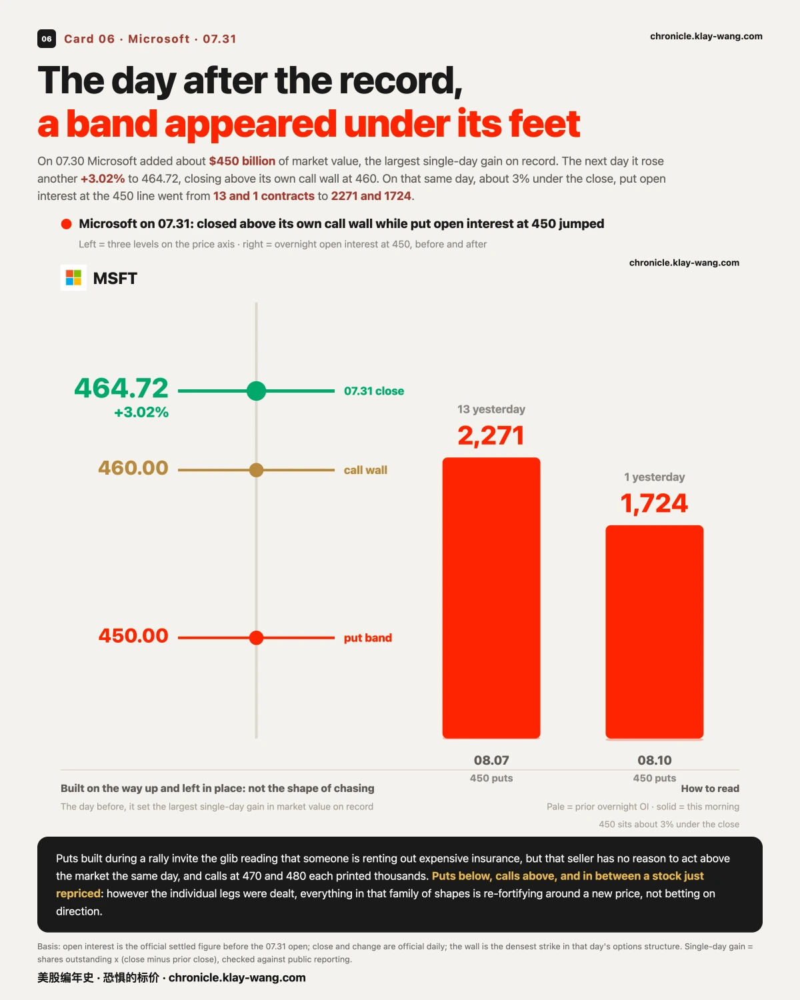
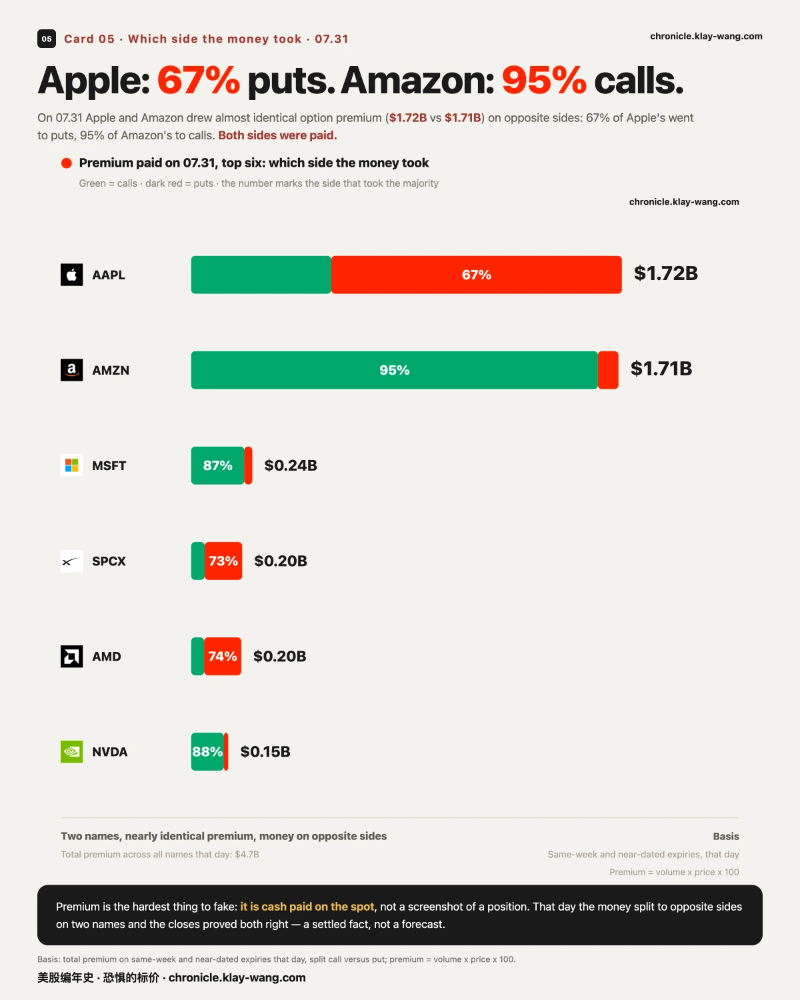

7 月最后一个交易日， 看跌的钱留下了，看涨的钱走了· 07-31
苹果 −7.35% 收在自家看跌密集价位下方，亚马逊 +15.32% 冲破自家看涨密集价位 16 点收 271.58：同一晚交的卷，第二天走成了两个方向
半导体高开全被卖掉：闪迪开盘时还涨 8.10%，收盘 −5.09%；超微与英特尔收在当天最低的 1% 位置

节目一 · 昨天埋的四注，今天开出来两注
开奖是这本账的存在理由，所以先说没开出来的那两注。
昨天盘中我们记下四笔当日新出现的下注，并把检验条件白纸黑字写了出来：隔夜持仓涨上去，就是真扎营；不动，就是当天倒手。今天两笔有答案，两笔永远没有答案。
先说答案最清楚的那笔。 标普 ETF 09.04 到期的两侧新单，昨天看起来是对称的：上方 6.6% 的看涨成交 3075 张、下方 8.6% 的看跌成交 2145 张。今天隔夜持仓摊开来，两侧完全不对称：看跌从 514 张涨到 1800 张，等于昨天成交量的六成留下过夜；看涨从 896 张只涨到 1162 张，留仓率 8.7%。 同一天、同一个到期日、同一批交易时段，买保护的钱住下了，赌上涨的钱当天就走了。这个到期日仍然钉在八月非农那一天。
微软那条看跌带是重锤。 08.07 到期 450 一线，隔夜持仓从 13 张跳到 2271 张；08.10 那档从 1 张跳到 1724 张。而微软今天还涨了 3.02%、收在 464.72。边涨边建、建完就留，在离现价 3% 的位置铺一条带子，这不是追涨的形状。
另外两笔，我们没有答案，而且永远不会有。 英特尔那组四腿和美光那七档看涨阶梯，都是当日到期合约：隔夜持仓结算之后、合约下架之前，只有当天盘中那一个窗口能查，而我们的采集轮次没有覆盖它。
所以这两笔的结论是无法判定，既不是没成立，也不是成立。** 教训已经记进流程：埋在当日到期合约上的开奖，动作必须排进当天的轮次，否则物理上就查不到了。


节目二 · 数据没砸动它，位置砸动了它
今天早上真正让指数掉头的，不是 08:30 那份数据。
雇佣成本指数 08:30 落地时，标普 ETF 只动了 0.6 点。真正的一幕在开盘之后：09:30 开在 744.69，五分钟内冲到 746.30：距离它自己的伽马翻转位 746.61 只差 0.31 点，没碰上去，掉头。接下来 40 分钟一路走到 737.69，跌掉 8.6 点；09:35 那根五分钟 K 线是全天最大量，是开盘那根的 7.7 倍。往下的路上依次穿过昨收、看跌密集峰 743、看跌墙 740。
然后午后全部收回来，收 747.03，站回翻转位上方。全天 +0.72%。
三段合起来是一句话：今天这根阳线的形状，是被几个价位画出来的，不是被那份数据画出来的。 我们测不到是谁在卖，也不预测它接下来去哪；能说的只有位置本身，它在自己的翻转位下沿被拒了一次，然后在收盘前拿了回来。

节目三 · 同一晚交卷，第二天走成两个方向
苹果收在自己的地板下面，亚马逊站上了自己的天花板。
苹果 −7.35% 收 308.91，落在自家看跌密集价位 325 的下方；亚马逊 +15.32% 收 271.58，把自家看涨密集价位 250 甩在身后 16 点。这两只是同一晚交的卷。
期权那边的钱，今天两边都押对了侧：苹果 07.31 到期的看跌带四档（310/315/320/330）全部在价内收官；亚马逊 07.31 到期的看涨带五档（245 到 265）同样全部价内。买对方向的人今天都拿到了钱。但这句话只描述已经发生的结算，不代表这些位置明天还成立。
另外两家：微软 +3.02% 站上自家看涨密集价位 460；谷歌午后独走 +6.73%，同样站上 335。

节目四 · 半导体：高开是给的，盘中是卖掉的
只看全天跌幅，会把当天最大的那一段抹掉。
闪迪今天全天 −5.09%。但拆开看：开盘时它还涨 8.10%，从开盘价算到收盘，它跌了 12.20%。 美光同样：跳空 +5.18%，从开盘算跌 10.54%，全天 −5.90%。
更值得记的是收盘位置：超微与英特尔都收在当天区间的最低 1%（当日最高最低之间，收盘落在最底部），美光 4%，闪迪 13%。六只半导体今天是同一个形状：跳空全为正，盘中全为负。
同一天，微软是反过来的：几乎平开，涨幅 3.27% 全部产生在盘中，收在当日区间的 88% 位置。
这里我们不说钱从半导体流去了软件，那需要资金流向数据，我们没有。能说的只有：这两件事发生在同一天。

节目五 · 今天没有一笔决断单
权利金最大的五笔，没有一笔是一口气打出来的。
我们逐笔把当日头部大单拆成 30 分钟成交分布，看最集中的那一根占全天多少：微软 460 看涨（权利金 2880 万美元）最集中的一根占 31.8%，超微 490 看跌（2140 万美元）占 33.9%，其余三笔更分散。五笔全部低于 70% 这条线，意思是它们都是整日累积出来的量，不是某个时刻的一个决断。
顺带一笔今天最值得留档的形状：标普 ETF 在 09.30 与 10.16 两个到期日上，各出现一组三档等距、量比 1 比 2 比 1 的深度价外看跌（间距都是 100 美元，中间那档的量恰好等于两翼之和，误差不到 0.1%）。这是蝶式结构的几何特征，两个到期日各一组、形状一致。方向不写，没有成交方向和分腿价格，买蝶还是卖蝶分不出来。这批持仓明天结算后应该大幅跳升；如果不涨，就是当天对冲平掉了。已经埋成 08.03 的开奖项。
节目六 · 为什么开盘不到一小时，很多票一起跳水
这是今天唯一一个值得摊开推理链的问题。先说结论：指数的那一跌和半导体的那一跌，机制不是同一个。
先看一个开盘前就摆在那里的分界。 每只票都有一条自己的伽马翻转线，它决定了做市商对冲的方向：现价在这条线下方，做市商的对冲是顺势的，价格往下他们跟着卖，跌幅被放大；现价在上方，对冲是逆势的，本该压住波动。今天开盘前，这张表分得异常干净：
两个指数都在自己的翻转线下方（标普差 0.68 点、纳指差 4.93 点），而十三只个股里有十一只在上方（苹果高出 12 点、微软 64 点、超微 45 点、美光 27 点）。
于是同一段时间里发生了两件形状相似、成因不同的事。
指数那一跌，机制解释得通。 标普开盘五分钟冲到距翻转线 0.31 点的地方被拒，随后四十分钟跌 8.6 点，而 09:35 那根五分钟 K 线是全天最大量、是开盘那根的 7.7 倍。它整个下跌过程都发生在翻转线下方，也就是对冲会放大跌幅的那一侧。午后它重新站上翻转线，收 747.03。跌得急、收得回，这是负伽马区的典型形状。
半导体那一跌，机制解释不通，所以更值得记。 它们六只当时全在翻转线上方。按机制，做市商的对冲本该压住波动。可它们还是从开盘一路被卖到收盘：闪迪从开盘算跌 12.20%，美光跌 10.54%，超微和英特尔收在当天区间的最低 1%。机制该压没压住，只剩一个解释：那是真实的卖压，强到盖过了对冲的方向。
再排除一种最省事的说法。 有人会说这是某个大户在砸。我们把当天权利金最大的五笔逐笔拆成 30 分钟分布，看最集中的那一根占全天多少：微软 460 看涨占 31.8%，超微 490 看跌占 33.9%，其余更分散，五笔全部低于 70% 这条线。也就是说，期权那一侧没有任何一笔是一口气打出来的。正股上有集中的抛压，期权上没有集中的下注：卖的人很多，而不是某一个人很大。
这条判断可以被推翻，条件写在这里。 如果下周指数重新站回翻转线上方之后波动明显变小，负gamma放大这条就得到一次支持；如果它站上去了、日内摆幅照旧，那这条解释我们就收回。半导体那边则看另一件事：跳空与盘中是否重新同号：连着几天高开高走或低开低走，说明隔夜定价的人和日内交易的人终于看法一致了；只要还是高开被卖，今天这个形状就还没结束。
我们不写钱从哪流到哪，那需要资金流向数据，我们没有。能说的是：位置在事前就写好了，而今天两层各自照着自己的位置走了一遍。
🌡 温度计
我有个恐惧温度计，量的就是市场现在花多少钱，给未来一年买保险。保险越贵，说明市场越怕。
今天读数 68.5（满分 100），意思是这份保险贵到了过去三年的前 31.5%。昨天还是 70.6。
这是整个七月的最低读数。 月初它从 73.5 出发，联储决议那天冲到 88.4，然后一路回到今天的 68.5。财报周里最吵的四家全交完了卷，而给未来一年买保护的价钱，收在了这个月的最便宜处。它不告诉你接下来会怎样；它只告诉你，天天跟恐惧做买卖的那批人，在七月的最后一天把价钱调到了全月最低。
Apple closed −7.35% below its own put wall; Amazon closed +15.32%, sixteen points above its call wall — same earnings night, opposite mornings
Semiconductors gave back every gap: SanDisk was up 8.10% at the open and closed −5.09%; AMD and Intel both closed in the bottom 1% of their daily range
1 · Two of yesterday's four bets settled
Settlement is why this ledger exists, so start with the two that never will.
Yesterday we logged four fresh bets and printed the test in advance: overnight open interest rises, someone camped; flat, it was churn. SPY's 09.04 expiry looked symmetric yesterday — 3075 calls 6.6% above spot, 2145 puts 8.6% below. Overnight it was anything but: puts went 514 → 1800, keeping 60% of yesterday's volume; calls went 896 → 1162, keeping 8.7%. Same day, same expiry: the protection money moved in, the upside money left before the close. That expiry still sits on August payrolls day.
Microsoft's put band was the heavier print. At the 450 line, 08.07 open interest went 13 → 2271 and 08.10 went 1 → 1724 — while the stock rose 3.02% to 464.72. Built on the way up, and left in place.
The other two have no answer and never will. Intel's four-leg stack and Micron's seven-strike call ladder were same-day expiries: the only window to check sits between overnight settlement and delisting, and our collection did not cover it. The verdict is "unmeasurable" ,not confirmed, not denied. The process fix is filed: when the bet is on a same-day expiry, the settlement check has to be scheduled into that same day.
2 · The data did not move it; the level did
At 08:30, employment costs landed and SPY moved 0.6 points. The real sequence came after the bell: it opened at 744.69, ran to 746.30 within five minutes,0.31 points below its own gamma flip at 746.61 and turned. Over the next forty minutes it lost 8.6 points to 737.69; the 09:35 bar carried the day's heaviest volume, 7.7 times the opening bar, cutting through the prior close, the put peak at 743 and the put wall at 740 on the way down. Then the afternoon took all of it back: 747.03, above the flip, +0.72% on the day.
In one line: today's candle was drawn by a handful of levels, not by the release. We cannot see who sold and we do not forecast where it goes; what we can say is where it was refused, and where it closed.
3 · Same earnings night, opposite mornings
Apple closed −7.35% at 308.91, under its own put wall at 325. Amazon closed +15.32% at 271.58, sixteen points through its call wall at 250. Both reported the same evening.
The options money was on the right side of both: Apple's 07.31 put band (310 to 330, four strikes) and Amazon's 07.31 call band (245 to 265, five strikes) all finished in the money. That describes a settlement that has happened, not a level that holds tomorrow. Elsewhere: Microsoft +3.02% above its 460 call wall, Alphabet +6.73% above 335.
4 · The gap was given; the session sold it
The full-day number hides the biggest move of the day. SanDisk finished −5.09% but it was up 8.10% at the open, and fell 12.20% from there. Micron gapped +5.18%, fell 10.54% from the open, closed −5.90%.
The close tells it best: AMD and Intel both finished in the bottom 1% of the day's range, Micron at 4%, SanDisk at 13%. Six semis, one shape: every gap positive, every session negative. Microsoft ran the opposite way, flat open, all 3.27% earned intraday, closing at 88% of its range.
We do not call this rotation. That claim needs flow data we do not have. What we can say is that both happened on the same day.
5 · No conviction prints today
We broke the five largest premium prints into 30-minute volume and asked how much sat in the heaviest bar: Microsoft's 460 calls ($28.8M) peaked at 31.8%, AMD's 490 puts ($21.4M) at 33.9%, the rest lower. All five under the 70% line: accumulated across the day, not decided in a moment.
One shape worth filing: on both the 09.30 and 10.16 expiries, SPY printed three equidistant deep out-of-the-money put strikes in a 1:2:1 ratio ,$100 apart, the middle strike's volume matching the two wings to within 0.1%. That is butterfly geometry, twice, identically. No direction claimed: without trade side and leg prices, bought and sold butterflies look the same. Open interest tomorrow settles it, and it is filed for 08.03.
Thermometer
My fear thermometer measures one thing: how much the market pays, right now, to insure the next year. The dearer the insurance, the more afraid the market.
Today it reads 68.5 out of 100, dearer than 68.5% of the past three years, against 70.6 yesterday. It is July's lowest reading. The month opened at 73.5, ran to 88.4 on Fed day, and closed here. Every one of the loudest four reported this week, and the price of insuring the year ahead finished the month at its cheapest.
本站不提供投资建议，不预测方向，不做择时。